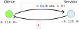
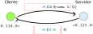

Creación de procesos
Envío y recepción de mensajes
Bucle de proceso
Modelo cliente-servidor
Servidores con estado
Funciones útiles sobre procesos
Elixir es un lenguaje funcional concurrente.
La concurrencia es una de las principales virtudes de la máquina virtual BEAM, en la que se ejecutan los programas de Elixir (y Erlang).
El modelo de concurrencia de Elixir está basado en actores y paso de mensajes.
Un actor es un proceso independiente que no comparte memoria con otros procesos.
La máquina virtual permite crear actores, que se envían mensajes entre ellos.
Un proceso de Elixir no es un proceso del sistema operativo ni una hebra de ejecución.
spawn/3La función spawn/3 crea un nuevo proceso.
El proceso recién creado ejecutará la función del
Modulo indicado, pasando los argumentos indicados en el
tercer parámetro.
> spawn(Procesos, :escribir_mensaje, [])
Hola, mundo!
#PID<0.136.0>Cada proceso tiene un identificador (PID), que
es de la forma <x.y.z>, donde x,
y, z son números.
El PID de un proceso servirá para enviar mensajes a ese proceso, u obtener información del mismo.
La función spawn devuelve el PID del proceso
creado.
> p = spawn(Procesos, :escribir_mensaje, [])
Hola, mundo!
...
> p
#PID<0.136.0> PID del proceso > p = spawn(Procesos, :escribir_mensaje, [])
Hola, mundo!
#PID<0.136.0>
> Process.alive?(p)
falseescribir_mensaje
para que espere 10 segundos antes de terminar.def escribir_mensaje() do
IO.puts("Hola, mundo!")
Process.sleep(10000) `sleep/1` recibe una cantidad de tiempo (en ms)
end> p = spawn(Procesos, :escribir_mensaje, [])
Hola, mundo!
#PID<0.136.0>
> Process.alive?(p) Antes de 10 segundos
true
> Process.alive?(p) Después de 10 segundos
falsedef ejecutar_proceso(i) do
IO.puts("Iniciando proceso #{i}")
Process.sleep(:rand.uniform(10000))
IO.puts("Finalizando proceso #{i}")
end> for i <- 1..4, do: spawn(Procesos, :ejecutar_proceso, [i])
[#PID<0.157.0>, #PID<0.158.0>, #PID<0.159.0>, #PID<0.160.0>]
Iniciando proceso 1
Iniciando proceso 2
Iniciando proceso 3
Iniciando proceso 4
Finalizando proceso 3 El orden de finalización puede variar
Finalizando proceso 4
Finalizando proceso 1
Finalizando proceso 2self/0self devuelve el PID del proceso que la
ejecuta.> for i <- 1..4, do: spawn(Procesos, :ejecutar_proceso, [i])
[#PID<0.177.0>, #PID<0.178.0>, #PID<0.179.0>, #PID<0.180.0>]
Iniciando proceso 1 con PID <0.177.0>
Iniciando proceso 3 con PID <0.179.0>
Iniciando proceso 4 con PID <0.180.0>
Iniciando proceso 2 con PID <0.178.0>
Finalizando proceso 4
Finalizando proceso 2
Finalizando proceso 3
Finalizando proceso 1iex,
esta sesión también se ejecuta en un proceso.spawn,
es posible enviar mensajes al proceso que ejecuta la
shell.spawn/1Existe una variante de spawn/3 que solamente toma un
parámetro.
Esta variante recibe una función (sin parámetros) que será la que el proceso ejecute.
> for i <- 1..5, do: spawn(fn -> IO.puts("Hola, soy #{i}") end)
[#PID<0.181.0>, #PID<0.182.0>, #PID<0.183.0>, ...]
Hola, soy 1
Hola, soy 2
Hola, soy 3
Hola, soy 4
Hola, soy 5send/2Envía el mensaje dado al proceso con el
pid dado.
El mensaje puede ser cualquier término de Elixir: enteros, átomos, listas, diccionarios, funciones, etc.
Si el proceso con el pid indicado estaba muerto, la
función send no hace nada.
La función send devuelve el mensaje enviado
send.Cada proceso tiene un buzón de mensajes, al que llegan todos los mensajes que se le envían.
Este proceso se comporta mediante una cola de mensajes.
> self()
#PID<0.134.0>
> pid = spawn(...)
#PID<0.208.0>
> send(pid, :hola)
:hola
:hola queda almacenado en la cola de
mensajes del proceso destinatario.> Process.info(p, :messages)
{:messages, [:hola]}receiveConsulta el primer mensaje de la cola de
mensajes, e intenta ajustarla con alguno de los patrones del
receive.
Si patroni
es el primer patrón que encaja con el mensaje, se evaluará la expresión
expri, y su
resultado será el resultado del receive.
receive no tiene ningún
mensaje en la cola de mensajes, la ejecución del proceso queda
suspendida en el receive hasta que llegue
algún mensaje.def espera_receive() do
IO.puts("Esperando mensaje...")
receive do
:hola -> IO.puts("Mensaje recibido")
end
IO.puts("Finalizando proceso...")
end> p = spawn(Procesos, :espera_receive, [])
Esperando mensaje...
#PID<0.226.0>
> Process.alive?(p)
true
> send(p, :hola)
Mensaje recibido
Finalizando proceso...
:hola
> Process.alive?(p)
false receiveSi el primer mensaje de la cola de mensajes no ajusta con ninguno de los patrones de las cláusulas:
Se toma el siguiente mensaje de la cola de mensajes, y se intenta ajustar con alguno de los patrones.
Si ajusta, se evalúa la expresión correspondiente.
Si no ajusta, se extrae de la cola y se guarda en la save queue. Se prueba con el siguiente mensaje, y así sucesivamente.
Cuando finalmente hay un mensaje que sí ajusta con
alguno de los patrones del receive, todos los mensajes de
la save queue se vuelven a colocar en la cola de mensajes
«principal».
…para que puedan ser procesados por un receive
posterior.
Los mensajes se extraen, uno a uno, de la save queue, y se insertan al principio de la cola de mensajes.
receive, ya que la
cola está vacía.4 al proceso.receive intenta ajustar el 4 con alguno
de sus patrones (0 o 1).4 pasa a la
save queue, y el proceso queda a la espera de otro
mensaje.3 al proceso.3 con alguno de los patrones del receive.3 tampoco ajusta con ninguno de ellos, pasa a
la save queue.0 al proceso.0 de la cola.x.Pasamos a ejecutar el segundo receive.
Intentamos ajustar el primer mensaje (4) con alguno
de los patrones (2 o 3).
El 4 no ajusta con ninguno de los mensajes, por lo
que pasa a la save queue:
Intentamos ajustar el siguiente mensaje (3) con
alguno de los patrones.
El 3 ajusta con el patrón de la segunda
cláusula.
Eliminamos el 3 de la cola.
receive seleccionada, y su resultado se asigna a la
variable y:IO.putsespera_dos_receives, el proceso
con PID <0.149.0> muere y, con él, se eliminan sus
colas de mensajes.receive pueden tener variables, que
quedarán ligadas a las partes del mensaje enviado que ajusten con
ellas.case, si un patrón es una variable,
ajustará con cualquier mensaje que no haya ajustado con los patrones
anteriores:> p = spawn(Procesos,
:calculadora, [])
#PID<0.168.0>
> send(p, {:mult, 1, 4})
Mensaje desconocido
{:mult, 1, 4}receivereceive.
when, al igual que en los
case.> p = spawn(Procesos,
:calculadora, [])
#PID<0.169.0>
> send(p, {:suma, -4, 0})
Mensaje desconocido
{:suma, -4, 0}afternum es un número entero que indica una cantidad de
tiempo en milisegundos.Si el proceso que ejecuta el receive tiene mensajes
en la cola que ajuste con alguno de los patrones, se ejecuta la cláusula
correspondiente, como si no hubiera un after.
Pero si ninguno de los mensajes de la cola encaja con alguno de
los patrones, del receive, la ejecución se suspende hasta
que:
num milisegundos.En este segundo caso, se evaluará la expresión exprafter.
> receive do
x -> IO.puts("Mensaje recibido!")
after 2000 -> IO.puts("Demasiado tarde!")
end
...Transcurren dos segundos...
Demasiado tarde!> send(self(), :ok)
> receive do
x -> IO.puts("Mensaje recibido!")
after 2000 -> IO.puts("Demasiado tarde!")
end
Mensaje recibido!afterafter 0
Sirve para no bloquear la ejecución si no hay mensajes en la cola
que ajusten con los patrones del receive.
Si la cola esta vacía, o ninguno de sus mensajes ajusta con
ningún patrón del receive, se evaluará la expresión del
after de manera inmediata.
after :infinity
Equivale a no colocar un after.
> p = spawn(Procesos,
:calculadora, [])
#PID<0.169.0>
> send(p, {:suma, 1, 3})
1 + 3 = 4
{:suma, 1, 3}
> send(p, {:resta, 0, 4})
...No ocurre nada...{:resta, 0, 4}?Cuando el proceso ha recibido el primer mensaje
{:suma, 1, 3}, se ejecuta el IO.puts
correspondiente a la guarda {:suma, x, y} y la función
calculadora finaliza.
Cuando enviamos el mensaje {:resta, 0, 4}, ya no
existe ningún proceso con el PID p.
send(p, {:resta, 0, 4}) no hace
nada.¿Y si quisiéramos que calculadora pudiese recibir más de un mensaje?
calculadora se haga una llamada recursiva a sí
misma para volver a esperar el siguiente mensaje:def calculadora() do
receive do
{:suma, x, y} ->
IO.puts("#{x} + #{y} = #{x + y}")
calculadora()
{:resta, x, y} ->
IO.puts("#{x} - #{y} = #{x - y}")
calculadora()
end
endreceive y esperará al siguiente mensaje.> p = spawn(Procesos, :calculadora, [])
#PID<0.216.0>
> send(p, {:suma, 4, 9})
4 + 9 = 13
{:suma, 4, 9}
> send(p, {:resta, 10, 3})
10 - 3 = 7
{:resta, 10, 3}
> send(p, {:suma, 1, 1})
1 + 1 = 2
{:suma, 1, 1}
def calculadora() do
receive do
{:suma, x, y} ->
IO.puts("#{x} + #{y} = #{x + y}")
calculadora()
{:resta, x, y} ->
IO.puts("#{x} - #{y} = #{x - y}")
calculadora()
end
end¿Puede haber desbordamiento de la pila de llamadas si
calculadora se hace demasiadas llamadas a sí
misma?
No, porque la función calculadora tiene
recursión de cola.
calculadora puede
estar ejecutándose de manera permanente, y nunca terminará.¿Y si queremos que el proceso calculadora finalice?
Hay dos maneras:
receive que no haga una llamada
recursiva a calculadora:> p = spawn(Procesos, :calculadora, [])
...
> send(p, {:suma, 3, 5})
3 + 5 = 8
{:suma, 3, 5}
> send(p, :salir)
:salir
> Process.alive?(p)
falseUtilizar Process.exit/2:
> p = spawn(Procesos, :calculadora, [])
...
> Process.exit(p, :kill)El segundo parámetro de exit es el motivo de la
finalización del proceso.
El átomo :kill fuerza la finalización.
En la arquitectura cliente-servidor, un servidor es un proceso que proporciona un determinado servicio a uno o varios clientes.
Cuando un cliente envía una petición a un servidor, el cliente espera hasta recibir una respuesta del mismo.
Cuando un cliente envía una petición a un servidor, el cliente continúa su ejecución sin esperar la respuesta del servidor.
Partimos de la siguiente implementación del proceso calculadora:
En lugar de imprimir el resultado de la operación por pantalla, queremos responder al cliente con dicho resultado.
🤔 ¿Cómo obtenemos el PID del cliente que envió la petición?

{pid, mensaje},
donde mensaje es el contenido de la petición
(payload).> p = spawn(ClienteServidor,
:calculadora, [])
#PID<0.125.0>
El cliente es la shell
> send(p, {self(), {:suma, 1, 10}})
{#PID<0.118.0>, {:suma, 1, 11}}
> receive do
result -> result
end
12 Respuesta del servidor
> send(p, {self(), {:resta, 3, 5}})
{#PID<0.118.0>, {:resta, 3, 5}}
> receive do: (result -> result)
-2Podemos encapsular la lógica del cliente en sendas funciones
suma/3 y resta/3, que hagan el envío y la
recepción de los mensajes correspondientes.
Estas funciones reciben como primer parámetro el PID del servidor.
> p = spawn(ClienteServidor, :calculadora, [])
#PID<0.128.0>
> ClienteServidor.suma(p, 4, 5)
9
> ClienteServidor.resta(p, 5, 2)
3send, hace un receive para esperar una
respuesta del servidor.🤔 ¿Qué pasa si el cliente ha recibido previamente un mensaje de un tercer proceso?
> p = spawn(ClienteServidor, :calculadora, [])
#PID<0.128.0>
> send(self(), :mensaje_inoportuno) El cliente se envía un mensaje a sí mismo
> ClienteServidor.suma(p, 4, 5)
:mensaje_inoportuno 😲
> ClienteServidor.resta(p, 10, 3)
9 😰 El receive de suma obtiene el mensaje
«intruso» en el receive, porque es el primero en la cola de
mensajes.
El resultado real de la operación suma (9) se queda
en la cola de mensajes del cliente, y es el que se obtiene en la
siguiente llamada a resta.
Cuando un cliente hace un receive tras enviar la
petición al servidor, debería exigir que la respuesta recibida sea la
del servidor, y no un mensaje cualquiera de otro proceso.
Para asegurar esto, hacemos que el servidor también devuelva su propio PID junto con la respuesta.

La implementación del código del servidor queda del siguiente modo:
A partir de ahora, el cliente exigirá que la respuesta recibida provenga del servidor:
Utilizando el operador pin (^), estamos
exigiendo que la primera componente del mensaje recibido sea igual que
el parámetro pid.
> p = spawn(ClienteServidor, :calculadora, [])
#PID<0.128.0>
> send(self(), :mensaje_inoportuno)
> ClienteServidor.suma(p, 4, 5)
9
> ClienteServidor.resta(p, 10, 3)
7suma
y resta, definimos una función call que agrupa
las partes comunes:start:> p = ClienteServidor.start()
> ClienteServidor.suma(p, 4, 1)
5El enfoque anterior es suficiente cuando el cliente solamente recibe llamadas síncronas.
Sin embargo, si se mezclan llamadas síncronas y asíncronas, es posible que el cliente, cuando espera la respuesta de una petición al servidor, reciba un mensaje del servidor correspondiente a otra petición distinta.
Para evitar esto, se utilizan referencias (references).
Las referencias son un tipo básico de Elixir que actúan como identificadores únicos.
Cada vez que el cliente hace una petición al servidor, envía una referencia nueva que identifica unívocamente a esa petición, y espera que el servidor devuelva esa misma referencia en su respuesta.
Más información: make_ref/0.
El servidor calculadora explicado anteriormente era
un servidor sin estado (stateless).
No obstante, en algunos casos hemos de almacenar información que se conserve entre peticiones.
Supongamos que queremos implementar un servidor que expida tickets numerados desde 1 hasta un número N.
Cuando el servidor recibe una petición :get_ticket,
devuelve una respuesta con el número de ticket más bajo que aún no haya
sido asignado.
Cuando el servidor ha respondido con último ticket (N), finaliza.
> p = ServidorTickets.start(5) Repartimos 5 tickets
> ServidorTickets.get_ticket()
{:ticket, 1}
> ServidorTickets.get_ticket()
{:ticket, 2}
...
> ServidorTickets.get_ticket()
{:ticket, 5}
10:52:20.380 [info] Servidor de tickets finalizaComenzamos con la función recursiva de cola que se encarga de recibir y atender los mensajes en el servidor.
Esta función tiene dos parámetros:
Estos dos parámetros conforman el estado del servidor.
Añadimos el caso base:
def tickets_loop(siguiente_ticket, max_tickets)
when siguiente_ticket > max_tickets do
Logger.info("Servidor de tickets finaliza")
end
def tickets_loop(siguiente_ticket, max_tickets) do
receive do
{pid, :get_ticket} ->
send(pid, {self(), {:ticket, siguiente_ticket}})
tickets_loop(siguiente_ticket + 1, max_tickets) Siguiente estado
_ ->
Logger.warning("Mensaje incorrecto")
tickets_loop(siguiente_ticket, max_tickets)
end
endLa función start/1 arranca el servidor, utilizando
el tercer parámetro de spawn para establecer el
estado inicial.
La función get_ticket/0 realiza la petición al
servidor cuyo PID se pasa como parámetro:
Habitualmente se suele utilizar un PID para enviar un mensaje a un proceso.
Esto nos obliga a propagar el PID de un proceso X a todos los procesos que hagan uso de X.
A veces es más fácil utilizar un átomo para hacer referencia a un proceso. Por ejemplo:
Process.register/2Elixir dispone de un registro que asocia nombres de procesos (átomos) con PIDs.
La función Process.register/2 añade una nueva
entrada a ese registro.
A partir de ese momento, se puede utilizar el nombre asignado al
proceso en la función send/2:
Para facilitar el uso del servidor de tickets, le asignamos un nombre.
Por convenio, suele utilizarse el nombre del módulo en el que se define el servidor.
También hay que actualizar el código del servidor para que, en lugar de devolver su PID, devuelva su nombre:
flushSolamente disponible desde iex.
Vacía la cola de mensajes del proceso que ejecuta la
shell de iex, mostrando los mensajes que
había.
pidSolamente disponible desde iex.
Permite construir un PID a partir de los tres números que lo identifican.
Útil cuando estamos trabajando desde la shell y se nos ha olvidado asignar el PID de un proceso recién creado a una variable.
> spawn(...)
#PID<0.124.0>
> p = pid(0, 124, 0)
> send(p, ...)Process.info/1Devuelve información sobre el proceso pasado como parámetro:
La información se devuelve en forma de keyword list.
> p = ClienteServidor.start()
> Process.info(p)
[
current_function: {ClienteServidor, :calculadora, 0},
initial_call: {ClienteServidor, :calculadora, 0},
status: :waiting,
message_queue_len: 0,
links: [],
trap_exit: false,
error_handler: :error_handler,
priority: :normal,
total_heap_size: 233,
heap_size: 233,
stack_size: 1,
reductions: 5,
...
]Process.info/2 para acceder a una
determinada componente de información.> send(self(), :hola)
> send(self(), :adios)
> Process.info(self(), :messages)
{:messages, [:hola, :adios]}